MSM Wintermelon
39 php
The MSM Wintermelon Milk Tea is a mildly Sweet
beverage with a subtle sting of bitterness coming from the
freshly brewed black tea leaves that blends in flawlessly.
MSM Okinawa
39 php
The MSM Okinawa Milktea offers a rich and
distinctive flavor that comes from the core ingredients
that comprise it - brown sugar and brewed black tea.
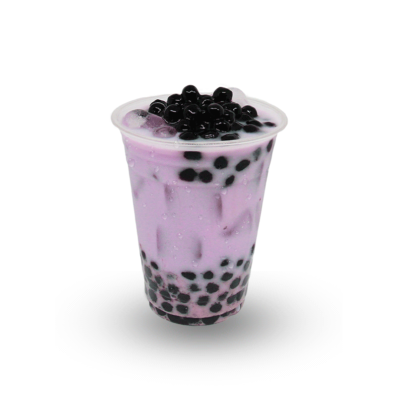
MSM Taro
39 php
The MSM Taro Milktea is made with sweet and
earthy taro roots that results in a rich and delightful
flavor, along with the combination of brewed black tea.
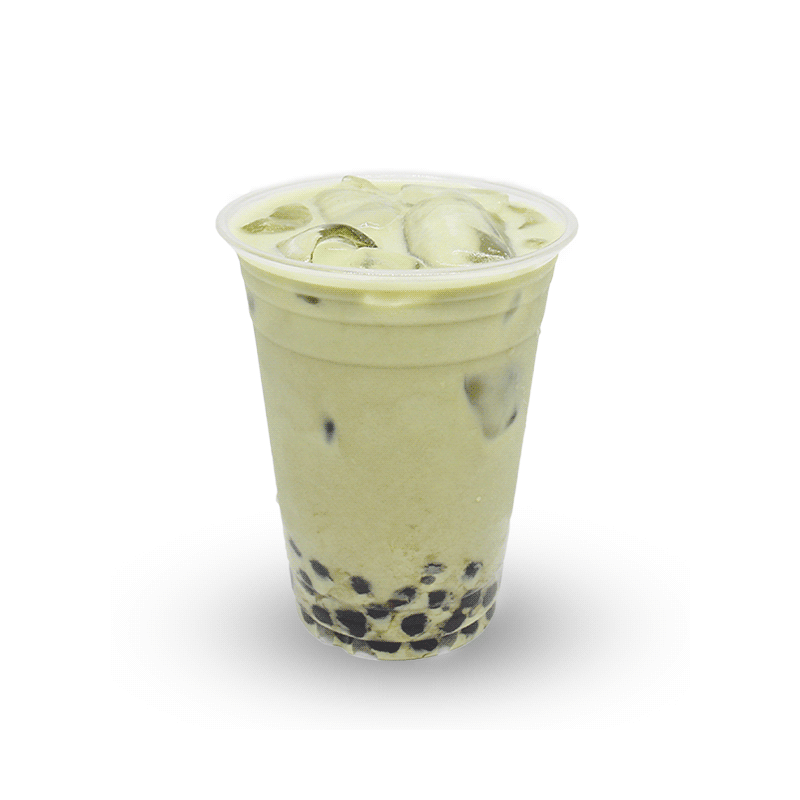
MSM Matcha
39 php
The MSM Matcha Milktea is a beloved bevearage
among matcha lovers as it entails that matcha goodness.
Each Sip of the beverage is an exquisite taste of Japan.
MSM Hazelnut
39 php
The MSM Hazelnut Milktea has a nutty profile
along with its creaminess and sweetness that is surely a
favorite among people who craves for a nutty experience.
MSM Chocolate
39 php
The MSM Chocolate Milktea is a crowd favorite
because it has a wide range of flavorful taste ,that is an
absolute staple beverage that kids and adults can enjoy.
MSM Thai
39 php
The MSM Thai Milktea is a beverage that is the
best union of warm spices and floral tea flavors. Where
each sip helps you sate your international cravings.
MSM Hokkaido
39 php
The MSM Hokkaido Milktea is a prominent taste of
freshly brewed tea and brown sugar. This drink is derived
and based from the exquisite and delightful taste of Japan.
MSM Oreo
39 php
The MSM Oreo Milktea is a must-have beverage for
die-hard oreo lovers, as it tickles the taste buds with its
very nostalgic and creamy oreo ice cream taste. Try it!
~ Fruit Tea Series ~
Avocado
49 php
The MSM Avocado Milk Tea is a thick, creamy, and
delectable beverage that is perfectly suited for early and
mid-day snack. This is a new take to the classic milk tea.
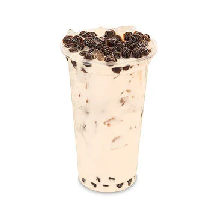
Coconut
49 php
The MSM Coconut Milktea is a delectable
combination of coconut and herbal tea that surely offers
a range of benefits, together, this is the ideal superfood.
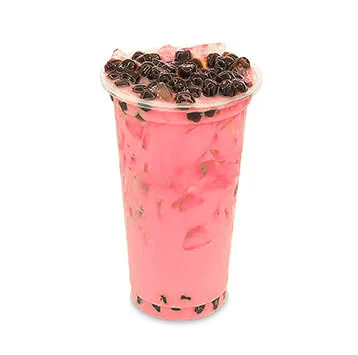
Strawberry
49 php
The MSM Strawberry Milktea offers a taste of
fresh strawberries with a hint of creaminess from the milk
and a light tea flavor. The tea tones down the sweetness.
Mango
49 php
The MSM Mango Milktea is a combination of fresh
milk and mashed ripe mangoes. Every sip of this drink will
hit your taste buds with a burst of authentic tropical flavor.
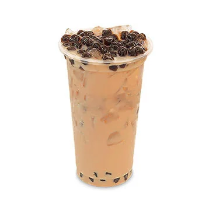
Passion Fruit
49 php
The MSM Passion Fruit Milktea is a preffered
refreshing beverage made with passion fruit pulp, black tea,
lime, and fresh milk. The acidity is balanced by the sugar.
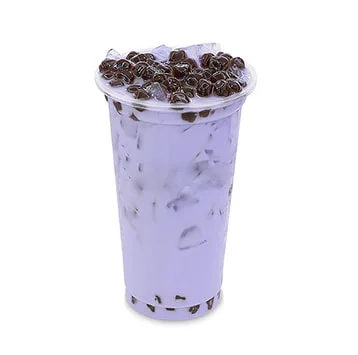
Blueberry
49 php
The MSM Blueberry Milktea is a pleasantly sweet
drink made with fresh milk and mashed blueberries.
Each sip is an exquisite experience of refreshment.
~ Premium Series ~
Red Velvet
55 php
The MSM Red Velvet Milk Tea is inspired by the
famous pastry combination of chocolate and berries.
this beverage will surely satisfy your sweet-tooth cravings
Black Forest
55 php
The MSM Black Forest Milktea is a delicious
flavor that will give your taste buds a nostalgic hit of
your favorite black forest pastry with a cherry aftertaste.
Dalgona
55 php
The MSM Dalgona Milktea will brighten your day
with the aroma of coffee and milk tea combined. Dalgona is
a popular Korean beverage that you can enjoy at MSM.
Salted Caramel
55 php
The MSM Salted Caramel Milktea has a distinct
sweetness made with whole milk and caramelized sugar,
filled with freshly brewed black tea, and honey pop pearls.
Chocolate Cheese Deluxe
55 php
The MSM Chocolate Cheese Deluxe Milktea has a
base of cheesecake, filled with whole milk, black tea, and
pop pearls, topped with cream cheese and chocolate bits.
Mango Cheese Deluxe
55 php
The MSM Mango Cheese Deluxe Milktea has a
base of cheesecake, filled with whole milk, black tea, and
pop pearls, topped with cream cheese and diced mango.
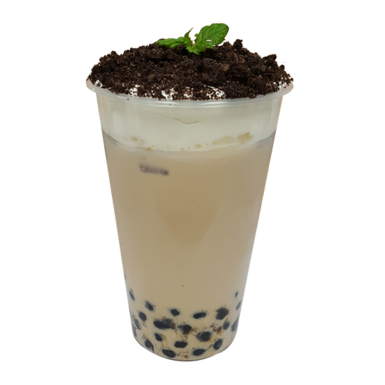
Oreo Cheese Deluxe
55 php
The MSM Oreo Cheese Deluxe Milktea has a
base of cheesecake, filled with whole milk, black tea, and
pop pearls, topped with cream cheese and oreo bits.
White Bunny
55 php
The MSM White Bunny Milktea is inspired by
a candy flavor from our youth. Imagine sipping a taste of
your favorite childhood candy. With MSM, it is possible.
~ Sweet Tooth Series ~
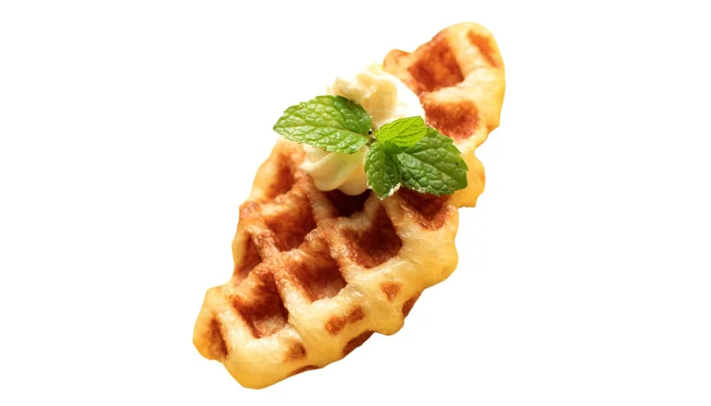
Classic
39 php
The MSM Classic Croffle is a munchy snack that
you can pair with any of our beverages. It is a cross of a
waffle and a croissant, topped with a scoop of meringue.
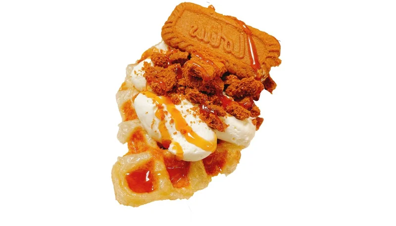
Biscoff Lotus
55 php
The MSM Okinawa Milktea offers a rich and
distinctive flavor that comes from the core ingredients
that comprise it - brown sugar and brewed black tea.
Chocolate Toffee
55 php
The MSM Chocolate Toffee Croffle is a snack
that you can surely enjoy with any of our top beverages.
It is topped with meringue, chocolate syrup, and toffee bits.
Caramel Toffee
55 php
The MSM Caramel Toffee Croffle is a snack
that you can surely enjoy with any of our top beverages.
It is topped with meringue, caramel syrup, and toffee bits.
Campfire S'more
55 php
The MSM Campfire S'more Croffle is a munchy snack.
It is topped with s'mores, chocolate syrup, graham powder,
and garnished with a handful of soft marshmallows on top.
Blueberry
55 php
The MSM Blueberry Croffle is a munchy snack that
you should definitely try with any of our beverages. It has
a layer of meringue on top and a garnish of blueberries.
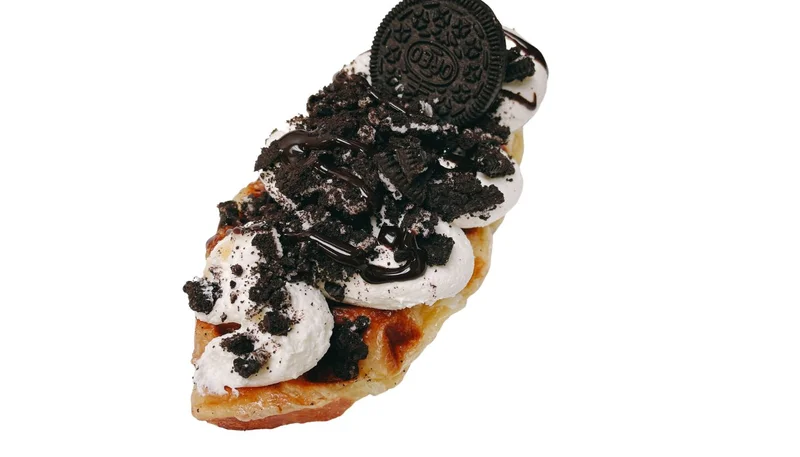
Oreo
55 php
The MSM Oreo Croffle is a munchy snack that you
should definitely try with any of our beverages. It has a
smooth layer of meringue, chocolate syrup, crushed oreo,
and garnished with a whole oreo cookie on top.
~ Cheese and Savory Series ~
Cream Cheese
39 php
The MSM Cream Cheese Croffle is a munchy snack
that you can definitely enjoy with any of our beverages. It
is baked with a layer of delicious cream cheese on top.
Mozzarella Cheese
39 php
The MSM Mozarella Cheese is a tasty snack,
baked with mozzarella cheese on top to embed its flavor,
as well as its sticky and creamy texture to every bite.
Double Cheese
39 php
The MSM Double Cheese Croffle is a tasty snack
that you can pair with any of our top beverages. It is baked
with two layers of milk cheese on top to embed its flavor.
Ham and Cheese
55 php
The MSM Ham and Cheese Croffle is a savory snack
that you should definitely try with any of our beverages.
It's made with milk cheese and thin ham slices on top,
dashed with a thick and creamy mayonnaise for finish.
Corn Cheese
55 php
The MSM Corn Cheese Croffle is a savory snack
that you should definitely enjoy with any of our beverages.
It is freshly baked with milk cheese on top, with a garnish
of roasted corn bits on top as finish for overall taste.
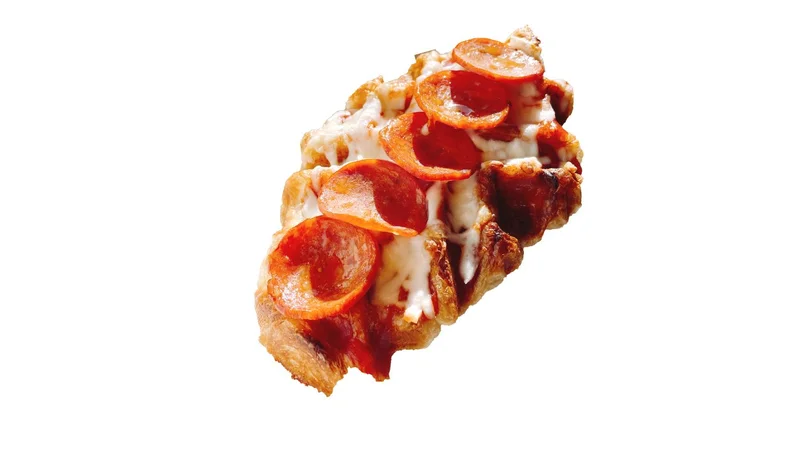
Pepperoni
55 php
The MSM Pepperoni Croffle is an innovative, savory,
and munchy snack that you should try with our beverages.
It offers a pepperoni taste, but in a munchy croffle bite.